")
")
")
")
")
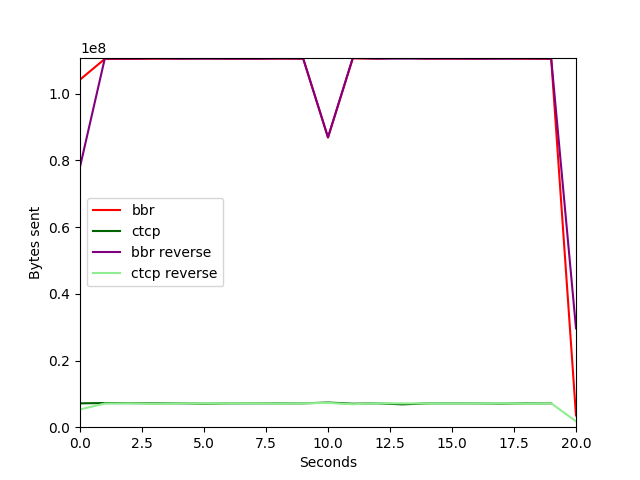
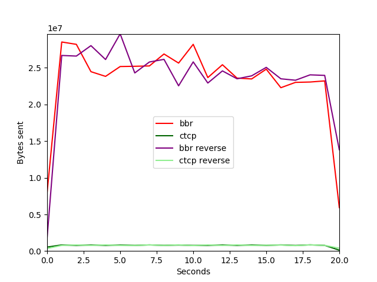
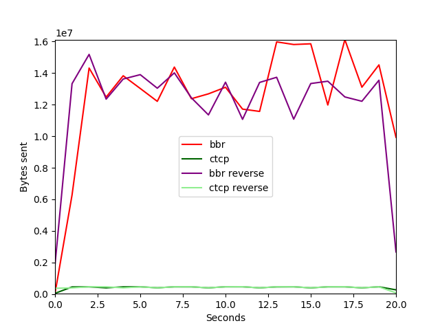
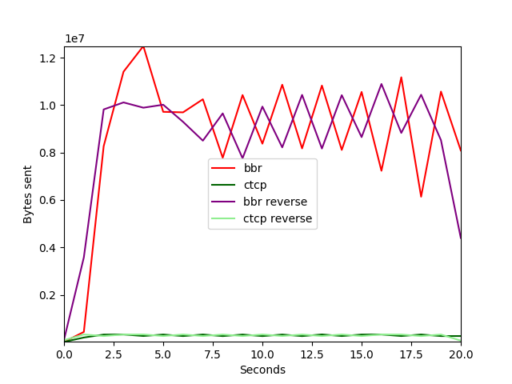
")
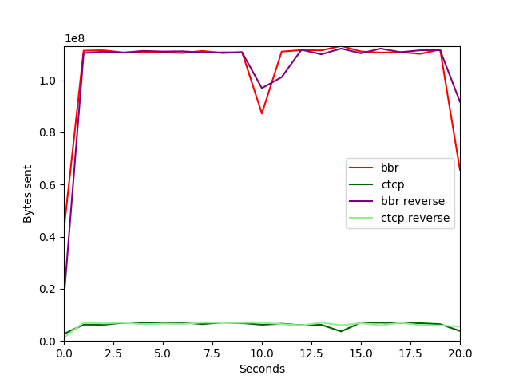
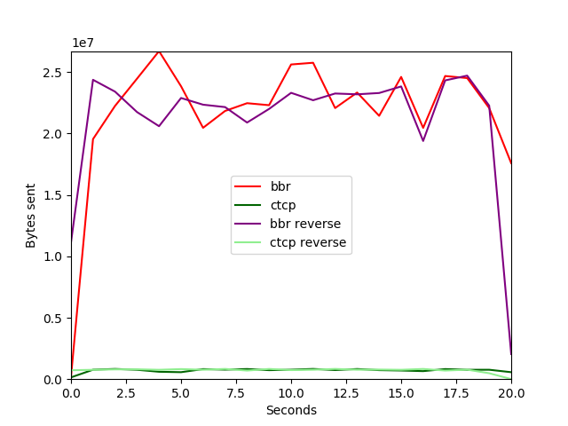
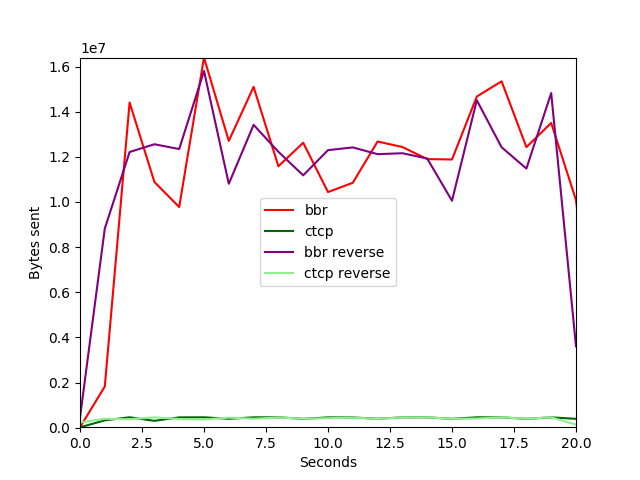
")
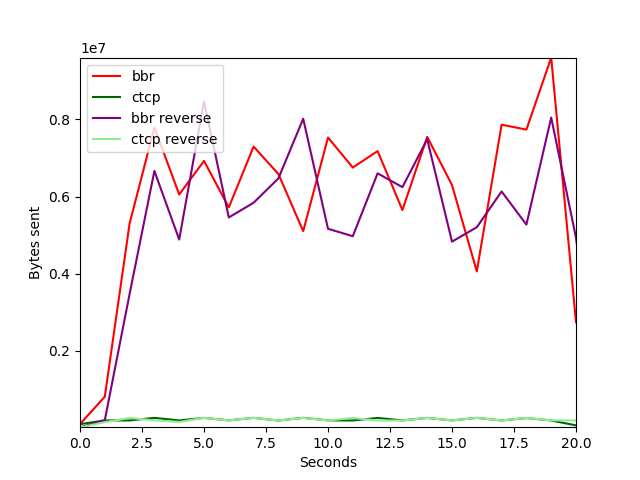
")
")
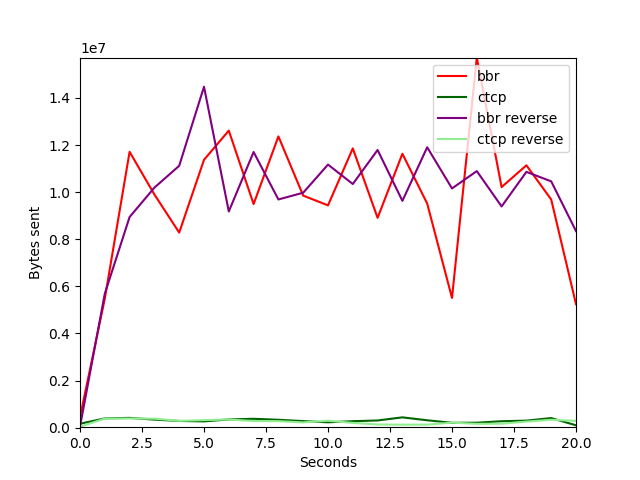
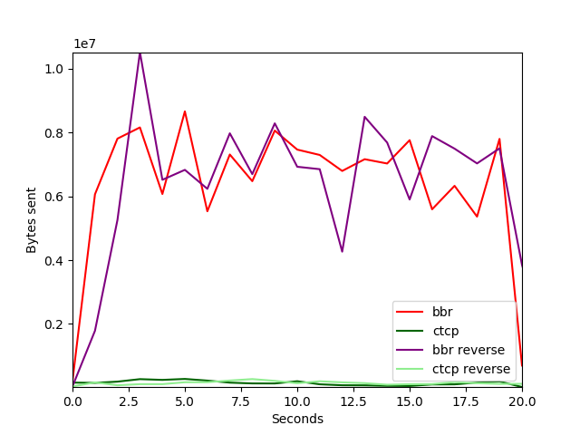
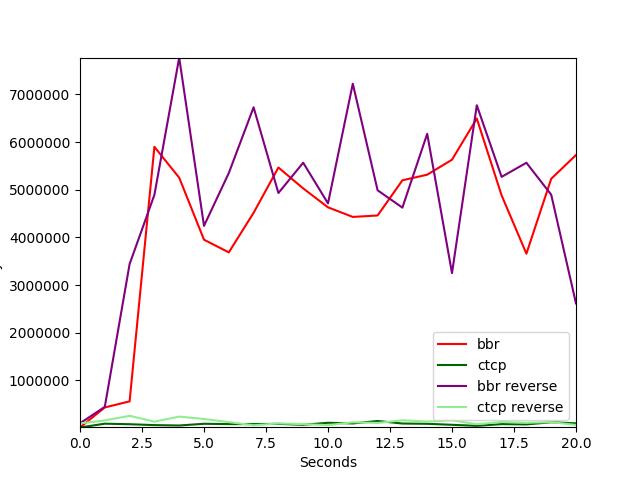
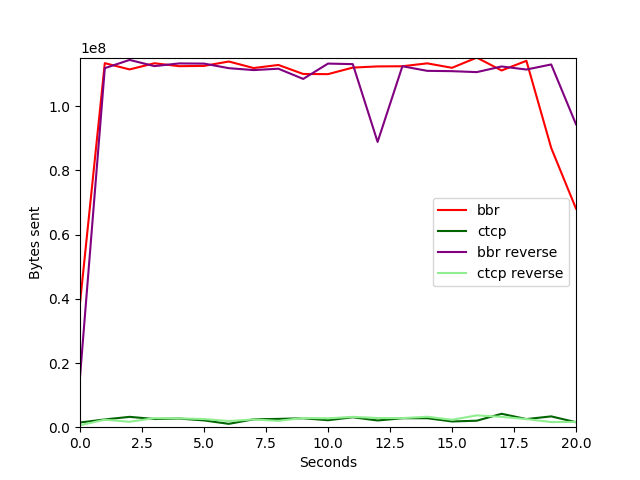
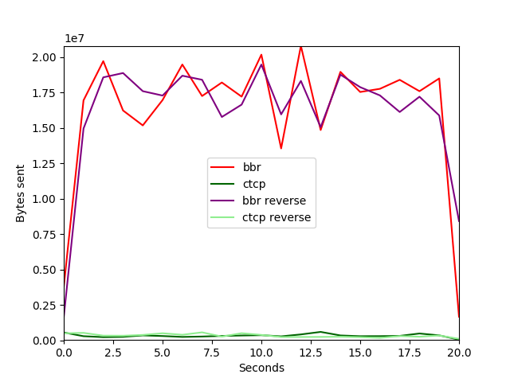
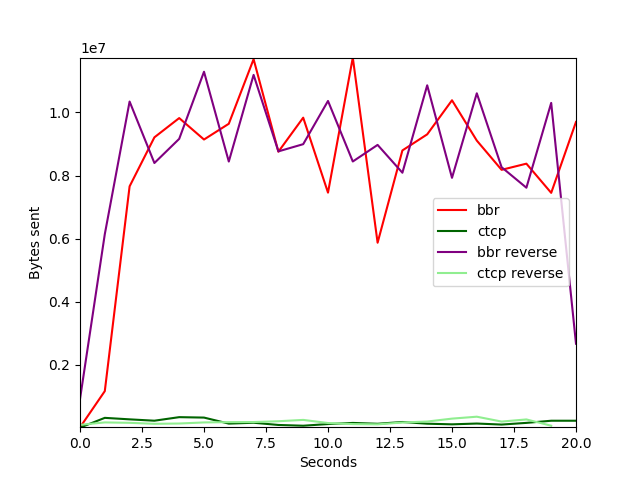
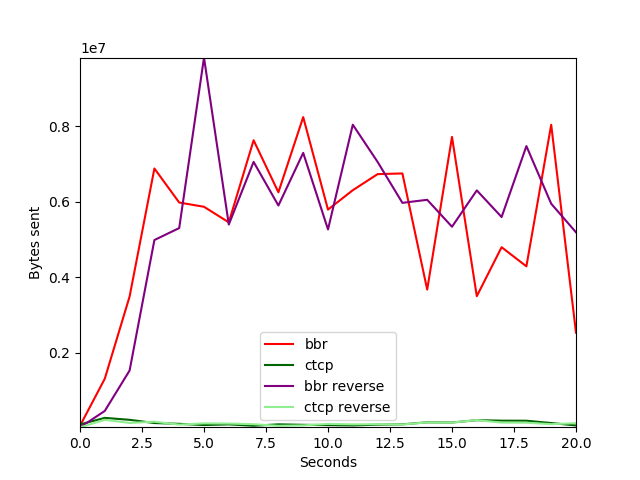
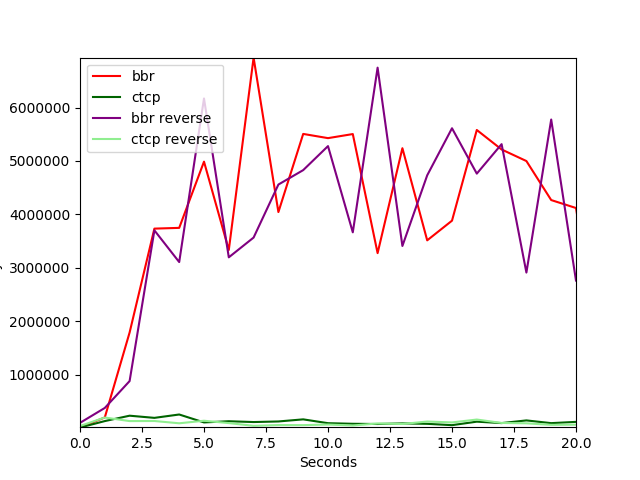
| bbr vs ctcp with 8ms delay and 0% loss | bbr vs ctcp with 80ms delay and 0% loss | bbr vs ctcp with 150ms delay and 0% loss |
| bbr vs ctcp with 220ms delay and 0% loss | bbr vs ctcp with 290ms delay and 0% loss | bbr vs ctcp with 8ms delay and 0.01% loss 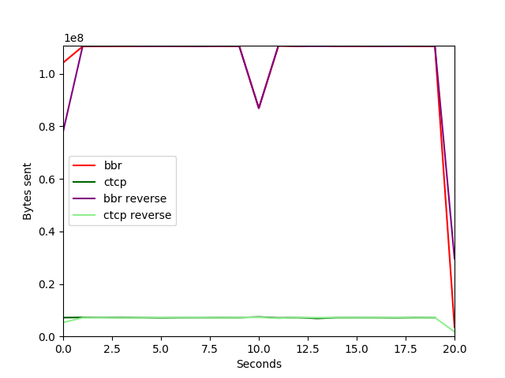 |
| bbr vs ctcp with 80ms delay and 0.01% loss 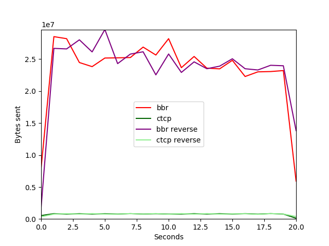 | bbr vs ctcp with 150ms delay and 0.01% loss 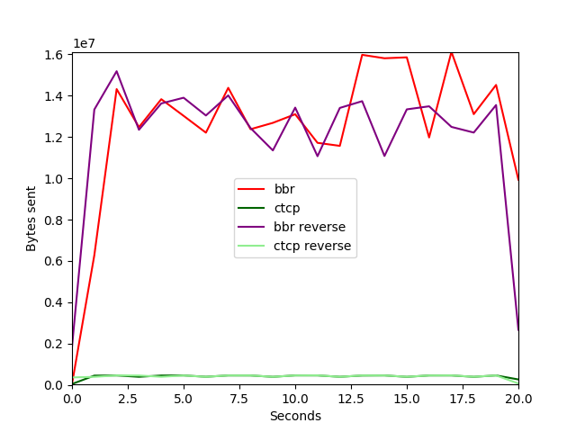 | bbr vs ctcp with 220ms delay and 0.01% loss 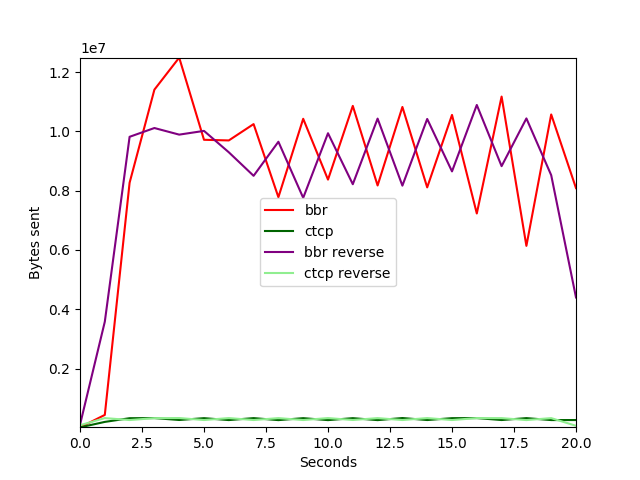 |
| bbr vs ctcp with 290ms delay and 0.01% loss | bbr vs ctcp with 8ms delay and 0.1% loss 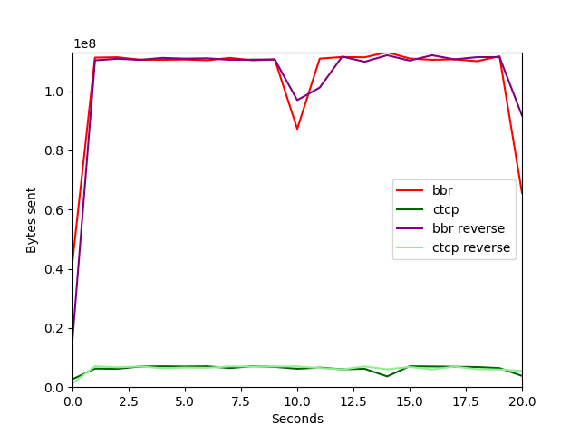 | bbr vs ctcp with 80ms delay and 0.1% loss 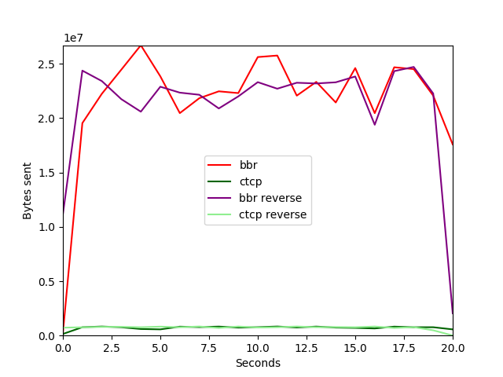 |
| bbr vs ctcp with 150ms delay and 0.1% loss 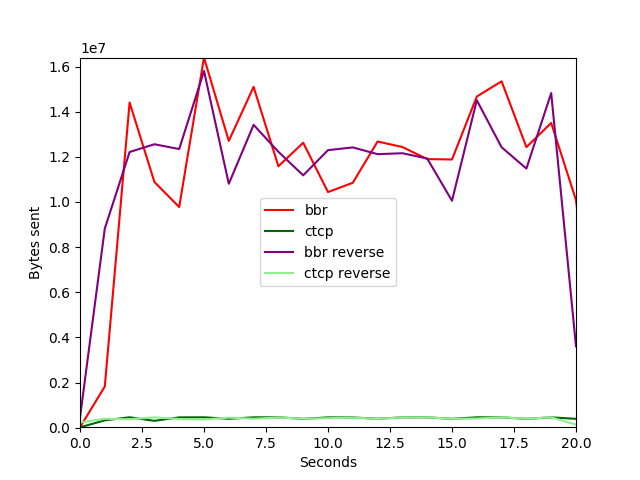 | bbr vs ctcp with 220ms delay and 0.1% loss | bbr vs ctcp with 290ms delay and 0.1% loss 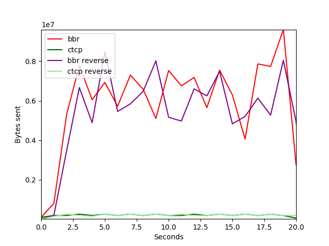 |
| bbr vs ctcp with 8ms delay and 0.6% loss | bbr vs ctcp with 80ms delay and 0.6% loss | bbr vs ctcp with 150ms delay and 0.6% loss 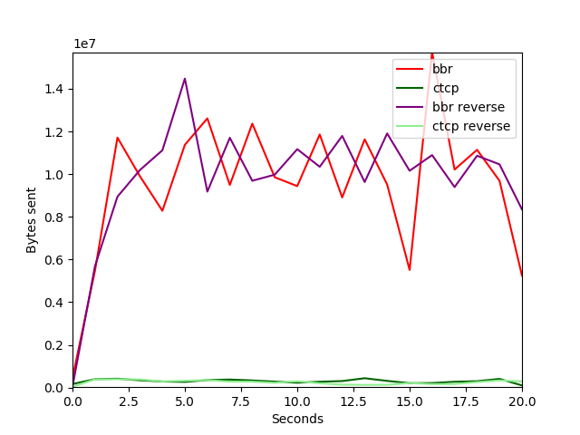 |
| bbr vs ctcp with 220ms delay and 0.6% loss 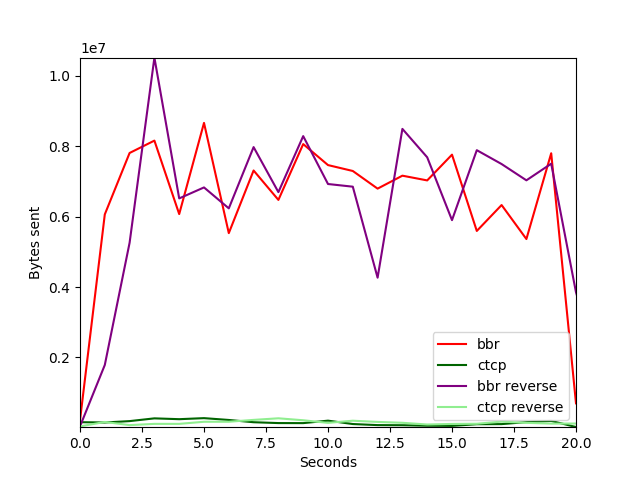 | bbr vs ctcp with 290ms delay and 0.6% loss 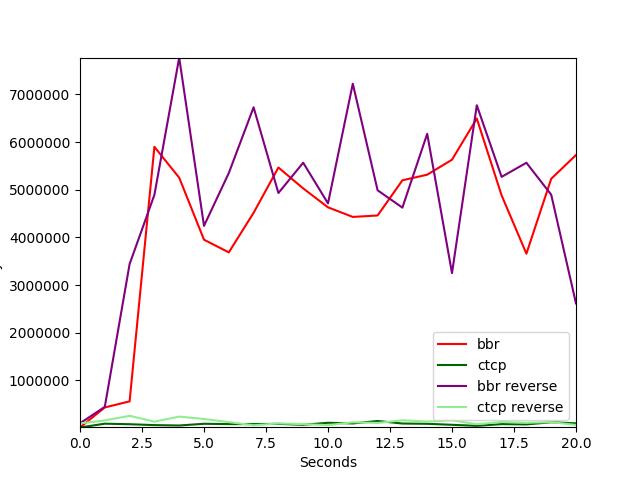 | bbr vs ctcp with 8ms delay and 1.2% loss 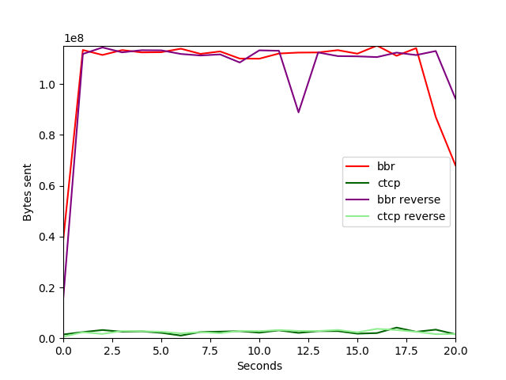 |
| bbr vs ctcp with 80ms delay and 1.2% loss 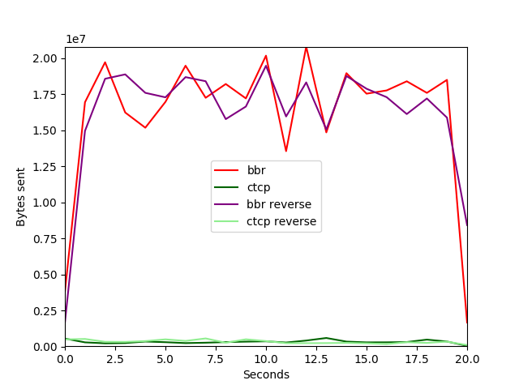 | bbr vs ctcp with 150ms delay and 1.2% loss 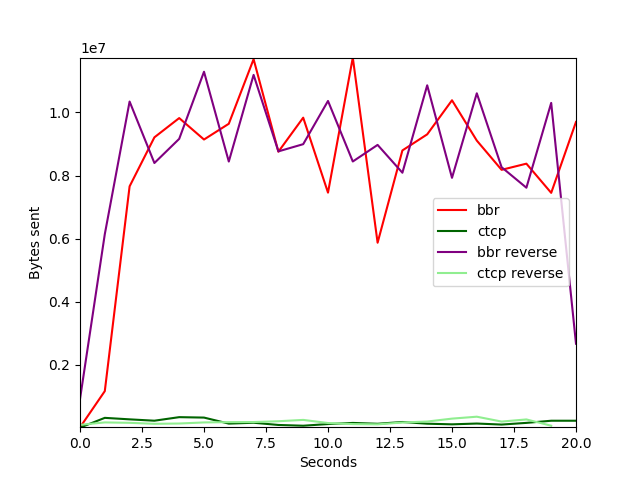 | bbr vs ctcp with 220ms delay and 1.2% loss 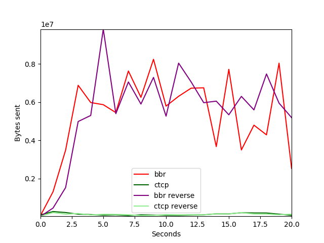 |
| bbr vs ctcp with 290ms delay and 1.2% loss 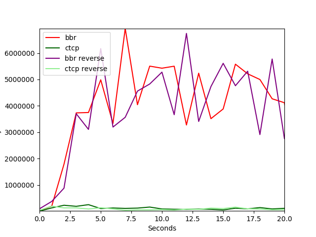 | This page contains 16 images. next